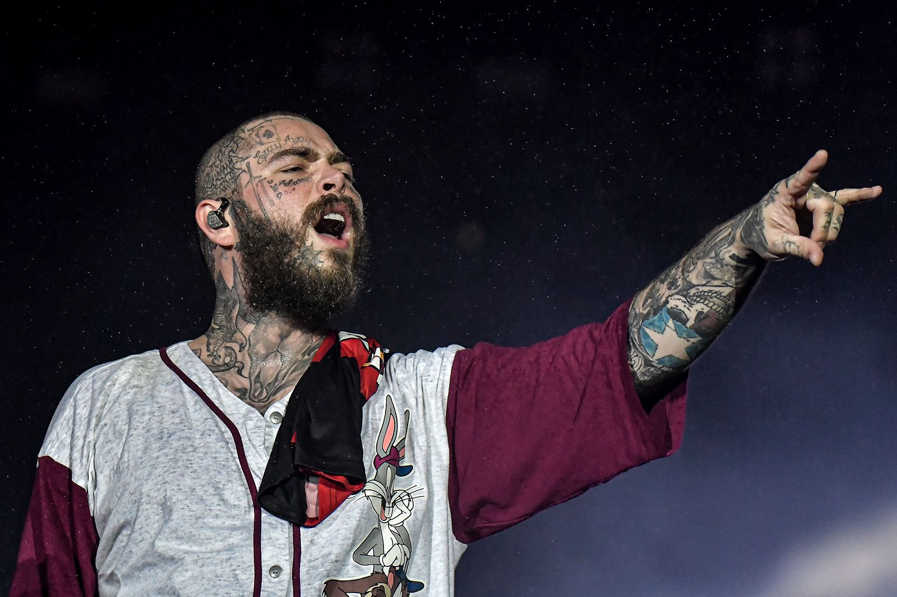
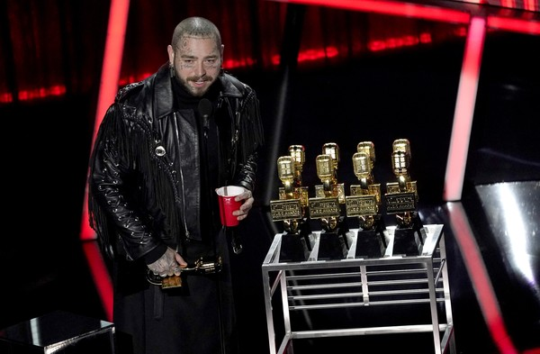

POST MALONE 😎
¿QUIÉN ES POST MALONE?
Austin Richard Post, más conocido musicalmente como Post Malone es un cantante y compositor estadounidense, nacido el 4 de julio de 1995. Aunque su sonido bebe del trap y del hip-hop, en sus canciones siempre sobresalen una emoción, un transfondo soul y una mirada pop absolutamente deslumbrantes.

CARRERA ARTÍSTICA
DISCOGRAFÍA
- STONEY: Sacado en el año 2016, fue su primer album oficial, en colaboración con otros artistas como Justin Bieber.
- BEERBONGS & BENTLEYS: Fue se segundo album, sacado al público el 27 de abril de 2018, siendo uno de los albunes más vendidos del año, llegando a vender 450 mil unidades.
- HOLLYWOODS'S BLEEDING (Mi Favorito):Tercer album del artista inaugurado el 6 de septiembre del año 2019. Éste también fue un "TOP VENTAS" debido a las grandes colaboraciones en las que aparecen Travis Scott o DaBaby, y canciones muy conocidas como la de "WOW" o "CIRCLES".
- TWELVE CARAT TOOTHACHE: Éste fue su último album (el 4º) sacado el 3 de junio de 2022, teniendo un total de 14 canciones totalmente nuevas y en las que colaboran la rapera Doja Cat o el cantante The Weekend.
FILMOGRAFÍA
Post Malone no se ha quedado solo en el ámbito de la música, ya que el compositor también se ha movido al ámbito de la música, donde fue el protagonista de la banda sonora de Spider-Man: Into the Spider-Verse.
PRÓXIMOS CONCIERTOS
MEJORES CANCIONES
| CANCIÓN | DURACIÓN | Nº LIKES | AÑO DE SALIDA |
| CIRCLES | 03:47 | 4'6M | 2019 |
| WOW | 02:37 | 2'7M | 2019 |
| GOODBYES | 04:17 | 4'1M | 2019 |
| ROCKSTAR | 04:02 | 12M | 2019 |
| BETTER NOW | 03:53 | 4'2M | 2018 |
GALERÍA FOTOGRÁFICA


REDES SOCIALES DEL CANTANTE